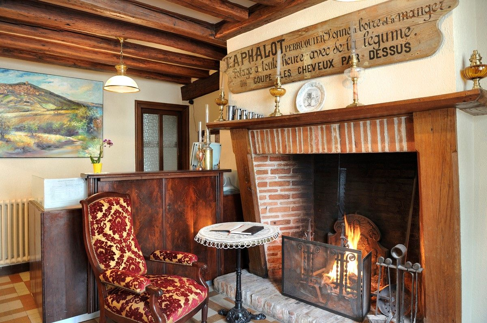
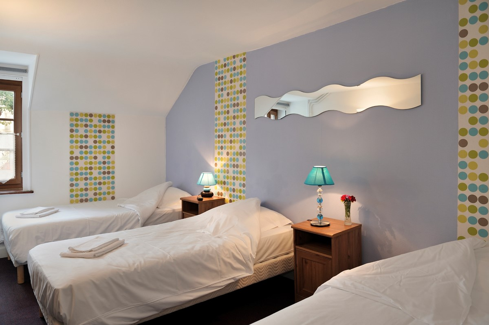
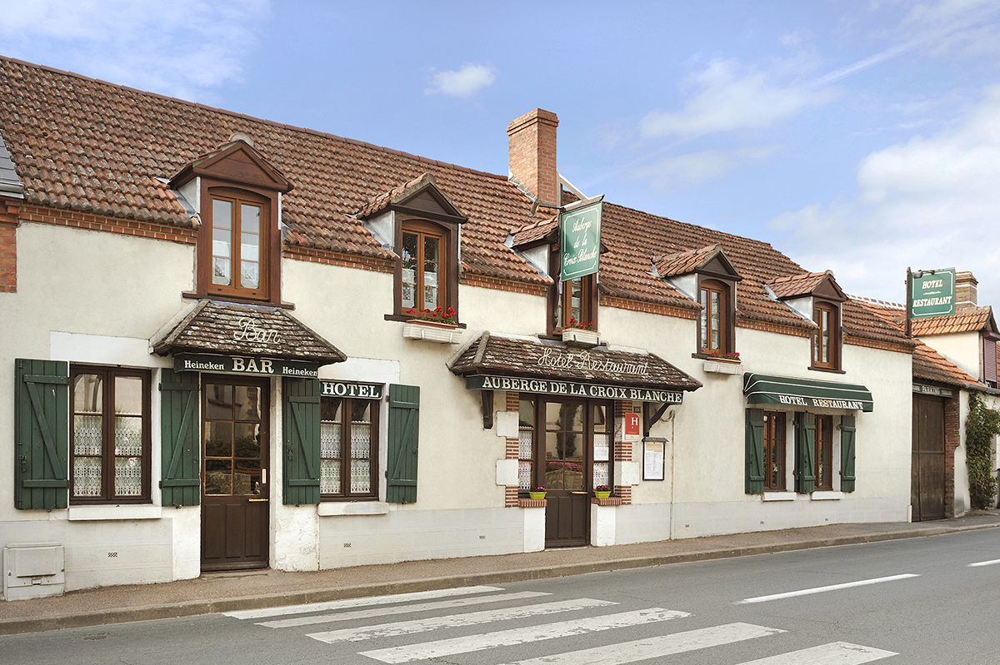
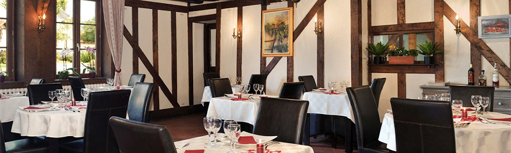
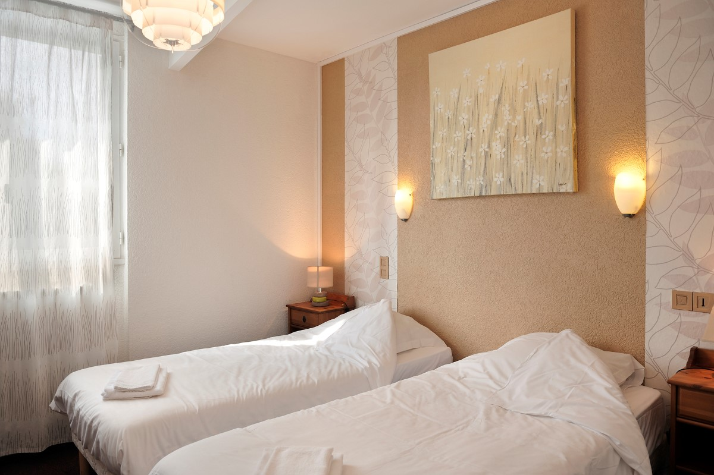
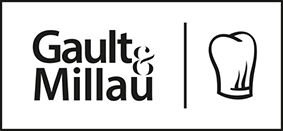
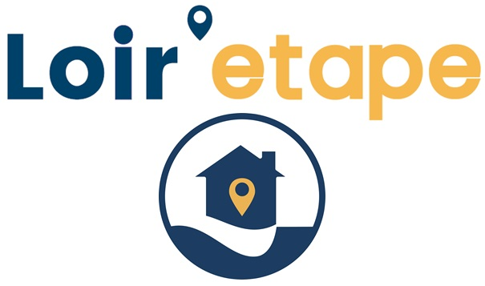

Le restaurant
Cuisine traditionnelle
et gastronomique.
Notre établissement est ouvert du jeudi au lundi, le midi de 12h15 à 14h et le soir de 19h30 à 20h45.
Notre établissement possède une salle de restaurant et une salle de bar ainsi que sept chambres d'hôtel.
Cuisine traditionnelle
et gastronomique.

Notre jardin est à votre disposition
pour vos apéritifs et cafés.

7 chambres confortables,
au cœur du village.
L'Auberge de la Croix Blanche, maison établie depuis 1870, se situe aux portes de la Sologne, dans la commune de Marcilly-en-Villette, à 20 km au sud d'Orléans.
Le charme typiquement solognot de l'Auberge, son accueil chaleureux et sa cuisine ne peuvent que ravir le cœur et les papilles de ses hôtes.


Notre restaurant vous propose une cuisine traditionnelle à choix multiples, midi et soir du jeudi au lundi, en fonction des arrivages et des produits de saison.
Nous offrons un menu de saison midi et soir du jeudi au lundi, et un menu du jour le midi quotidiennement renouvelé.

L'Auberge de la Croix Blanche (1*), établissement fondé il y a 150 ans par Jules Taphalot « Perruquier », vous propose 7 chambres confortables, au cœur du village de Marcilly-en-Villette (à 20 km d'Orléans, 10 km de La Ferté-Saint-Aubin et 7 km de Ménestreau-en-Villette).
Pour un repas d'entreprise, de famille, communion, baptême, mariage, cousinage, le Chef et son second se feront un plaisir de satisfaire vos demandes.
Menu réduit avec un choix de 2 entrées, 2 plats et 2 desserts de notre menu à la carte.
Menu unique pour la table à précommander 48h à l'avance.
Pour tout autre type d'évènement, n'hésitez pas à nous consulter.
Le midi de 12h15 à 14h
Le soir de 19h30 à 20h45
Fermé le dimanche soir du 1er novembre au 30 avril

